Make my song: type your lyrics, hear them in your voice
One button walks you through it. You type, Isle Voice builds a beat and raps (or sings) your words on it with a stock voice, then free Google Colab re-voices that draft as you. You bring the result back and export your song.
Watch it (about 1 minute, no sound)
Real screen recording of the app on a tablet-size screen. The Colab part is shown with illustrations, and the “your voice” file in the video is a stand-in, not a real Colab result.
Before you start (once only)
- Your voice bank. To learn your voice, the model needs recordings of you. In Isle Voice, scroll to Voice bank and record 10–30 minutes of you talking or rapping, in a quiet room, no beat behind you. You do this one time.
- A Google account (the same one you use for Gmail or YouTube). The voice step runs on free Google Colab with your account and saves your voice model in your Google Drive.
- Time. The first time, training your voice takes about 45–120 minutes on Colab's free T4 GPU, plus 5–10 minutes of setup. After that, each new song only needs the conversion, about 5–10 minutes.
- Privacy. Your recordings stay in this browser until you tap Apply my voice. Then they only travel between your device, your own Colab session and your own Google Drive. No other file host is used. Only use your own voice, or a voice you have permission to use.
1Type it
Open Isle Voice → Make my song. Give the song a name and type your lyrics, one line per bar (up to 32 lines). Pick Rap or Sing, a beat style, a mood, and a draft voice. There's no recording step. If you'd rather rap it yourself, tap or record it instead.
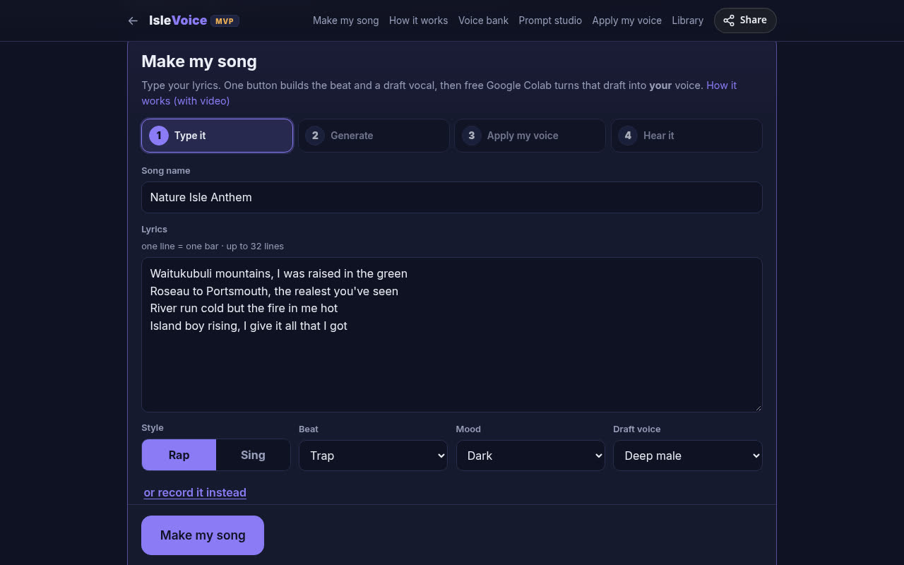
2Generate
Tap Make my song. Isle Voice builds the beat, then writes each line onto its bar: every syllable is placed on the 8th‑ or 16th‑note grid so it lands on the beat like a rap flow. With Sing, it also bends each syllable onto a simple melody. The first time, it downloads a free on‑device voice (about 90 MB, then it's saved). Everything runs on your device.
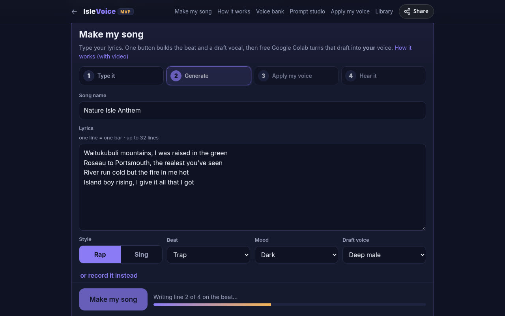
3Hear the draft
Press play. You'll hear your words on the beat in a stock voice. That's just a guide for timing and flow, and the next step replaces the voice with yours. Don't like it? Change words or New beat, then go again.
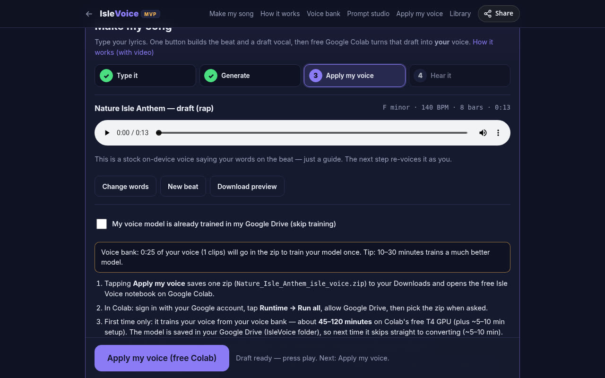
4Tap “Apply my voice”
- First time: leave My voice model is already trained unticked. Your voice bank goes into the zip so Colab can train your model.
- After your first song, tick it. The zip is then tiny and Colab skips training. Isle Voice remembers this for you.
- Tap Apply my voice. One zip (
Song_isle_voice.zip) saves to your Downloads, and the free Isle Voice notebook opens on Google Colab in a new tab. If the tab doesn't open, tap Open Colab again.
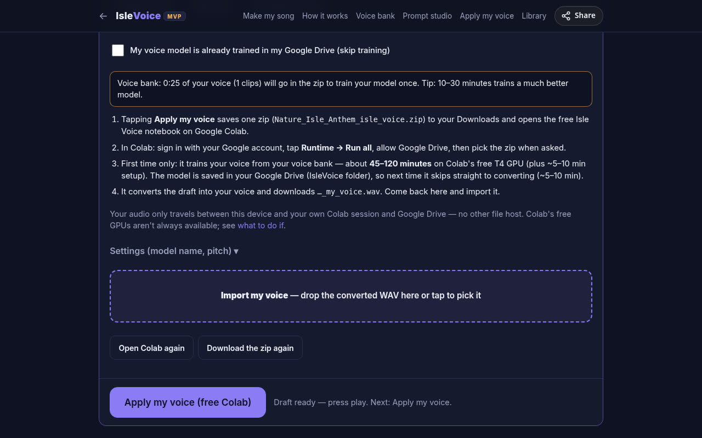
5In Google Colab
These pictures are illustrations, because we can't screenshot your Google session. Your screen will look similar.
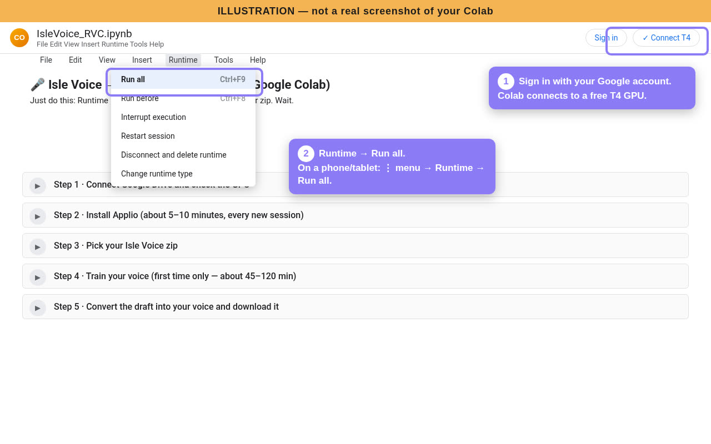
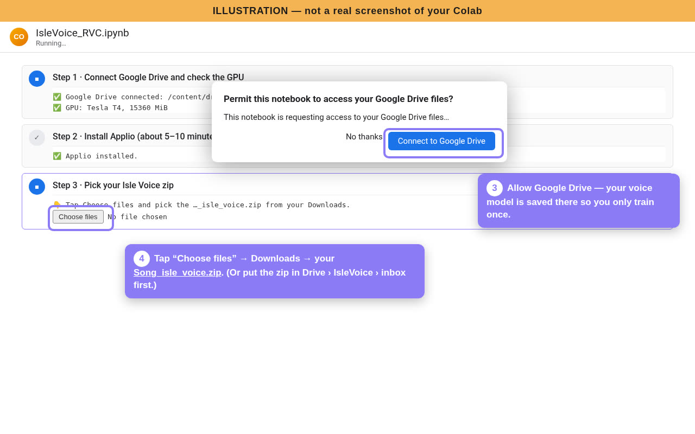
…_isle_voice.zip from Downloads. (Or put the zip in Drive › IsleVoice › inbox before you start, and it's found automatically.)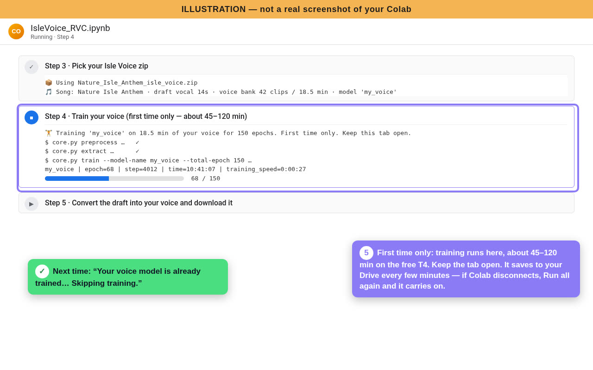
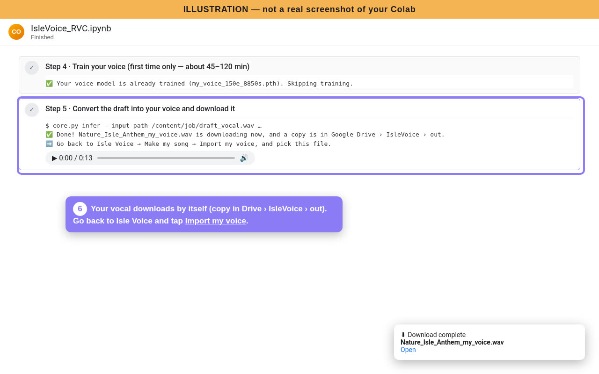
…_my_voice.wav downloads by itself, and a copy goes to Drive › IsleVoice › out.Behind the scenes: the notebook installs the free, open‑source Applio (RVC), pinned to a tested version. It trains a 40 kHz RVC v2 model from your voice bank (150–300 epochs depending on how much audio you have) and converts with RMVPE pitch tracking. Notebook: IsleVoice_RVC.ipynb.
6Import your voice
Come back to Isle Voice. It remembers where you were. The main button now says Import my voice: tap it (or drop the file on the dashed box) and pick …_my_voice.wav from Downloads.
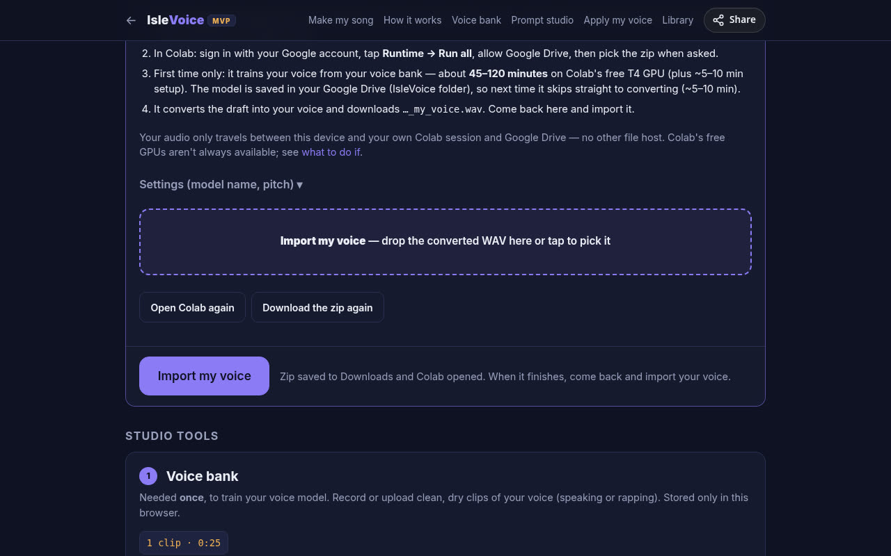
7Hear it and export
Isle Voice lines your vocal up with the beat automatically by matching it to the draft. It adds the Pro vocal polish (rumble cut, gentle compression, limiter), mixes it over the beat and plays it. Use Timing nudge and Vocal level if you want, then Download my song (WAV) or Export MP3.
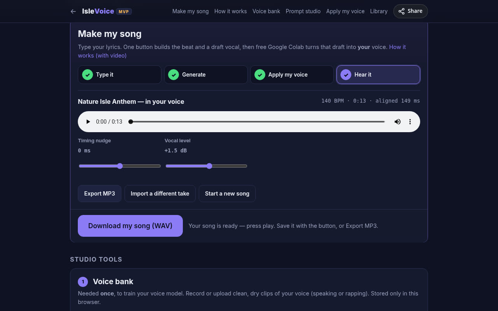
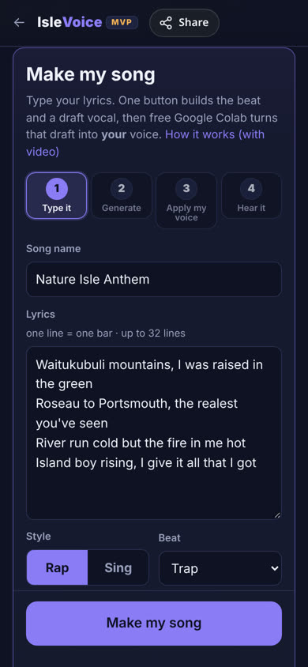
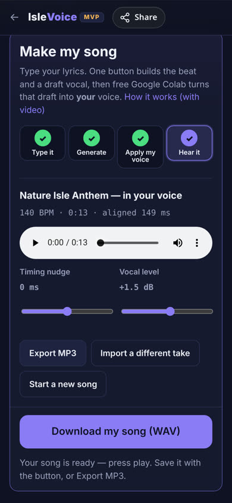
What to do if…
- Colab disconnects or the tab closes mid-training
- Open the notebook again (Open Colab again in Isle Voice) and tap Runtime → Run all. Your training was saved to Google Drive › IsleVoice › models every few minutes, and it carries on from there. Keep the Colab tab in front and your screen awake while it trains. Free sessions drop when idle and have a time limit.
- “No GPU” or “cannot connect to a GPU backend”
- In Colab: Runtime → Change runtime type → T4 GPU → Save, then Run all. If Colab says no GPU is available, the free GPUs are busy or your free daily time is used up. Try again in a few hours or the next day. Nothing is lost.
- Colab can't find my zip
- Make sure you picked the
…_isle_voice.zip(not the converted WAV). Or put it in Google Drive › IsleVoice › inbox and Run all again. It uses the newest zip there from the last 6 hours. - “No trained model… and this zip has no voice bank”
- You ticked already trained before a model existed. Untick it in Isle Voice, make sure your voice bank has recordings, then tap Apply my voice again.
- The timing is wrong (vocal early or late)
- Use Timing nudge in step 7 (± 250 ms). If a whole line is in the wrong bar, check that each lyric line is one bar. Long lines get squeezed, so split them into two lines. Then Change words and make it again.
- It sounds robotic or not like me
- The draft voice is robotic on purpose. Only the converted file should sound like you. If that sounds off, record more voice bank (aim for 20–30 minutes of clean, dry audio with a mix of your talking and rapping), then train again with a new model name under Settings. If it sounds too high or low, set Pitch shift in Settings (−12 to +12) and Apply again. Rap usually sounds best with Rap style and the Deep male or Warm male draft voice.
- The first “Make my song” is slow
- The first time downloads the free on‑device voice (about 90 MB). After that it's cached and much faster.
- I'd rather use my own recorded vocal
- In step 1 tap or record it instead. Tap the button to build the beat, put headphones on, then Record over the beat. Your take becomes the draft.